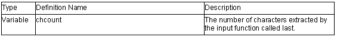

istream Class

1. int istream::_ec2p_getistr( char* str, unsigned int dig, int mode)
Converts str with the radix specified by dig.
Return value: Returns the converted radix. It an error is generated, -1 is returned.
2. istream::istream( streambuf *sb)
Constructor of class istream.
Calls ios::init(sb).
Specifies chcount=0.
3. virtual istream::~istream()
Destructor of class istream.
4. istream& istream::operator >> ( bool &n)
istream& istream::operator >> ( short &n)
istream& istream::operator >> ( unsigned short &n)
istream& istream::operator >> ( int &n)
istream& istream::operator >> ( unsigned int &n)
istream& istream::operator >> ( long &n)
istream& istream::operator >> ( unsigned long &n)
istream& istream::operator >> ( float &n)
istream& istream::operator >> ( double &n)
istream& istream::operator >> ( long double &n)
Stores the extracted characters in n.
Return value: *this
5. istream& istream::operator >> ( void * &p)
Converts the extracted characters to a void type and stores them in the memory specified by p.
Return value: *this
6. istream& istream::operator >> ( streambuf *sb)
Extracts characters and stores them in the memory area specified by sb.
If there is no extracted character, setstate(failbit) is called.
Return value: *this
7. streamsize istream::gcount() const
References chcount (number of extracted characters).
Return value: chcount
Return value: If characters are extracted: Extracted characters.
If no characters are extracted: Calls setstate(failbat), eof.
9. istream& istream::get(char &c)
istream& istream::get(signed char &c)
istream& istream::get(unsigned char &c)
Extracts characters and stores them in c. If the extracted characters are EOF, failbit is specified.
Return value: *this
10. istream& istream::get( char* s, streamsize n)
istream& istream::get( signed char* s, streamsize n)
istream& istream::get( unsigned char* s, streamsize n)
Extracts string literals with size n-1 and stores them in the memory area specified by s. If ok_==false or no characters were extracted, failbit is specified.
Return value: *this
11. istream& istream::get( char* s, streamsize n, char delim)
istream& istream::get( signed char* s, streamsize n, char delim)
istream& istream::get( unsigned char* s, streamsize n, char delim)
Extracts string literals with size n-1 and stores them in the memory area specified by s.
If delim is found in the string literal, input is stopped.
If ok_==false or no characters were extracted, failbit is specified.
Return value: *this
12. istream& istream::get( streambuf&sb, char delim)
Extracts string literals and stores them in the memory area specified by sb.
If delim is found in the string literal, input is stopped.
If ok_==false or no characters were extracted, failbit is specified.
Return value: *this
13. istream& istream::get( streambuf&sb)
Extracts string literals and stores them in the memory area specified by sb.
If ok_==false or no characters were extracted, failbit is specified.
Return value: *this
14. istream& istream::getline( char* s, streamsize n)
istream& istream::getline( signed char* s, streamsize n)
istream& istream::getline( unsigned char* s, streamsize n)
Extracts string literals with size n-1 and stores them in the memory area specified by s. If delim is found in the string literal, input is stopped.
If ok_==false or no characters were extracted, failbit is specified.
Return value: *this
15. istream& istream::getline( char* s, streamsize n, char delim)
istream& istream::getline( signed char* s, streamsize n, char delim)
istream& istream::getline( unsigned char* s, streamsize n, char delim)
Extracts string literals with size n-1 and stores them in the memory area specified by s.
If character delim is found, input is stopped.
If ok_==false or no characters were extracted, failbit is specified.
Return value: *this
16. istream& istream::ignore( streamsize n, int_type delim)
Skips reading the number of characters specified by n.
If character delim is found, skipping is stopped.
Return value: *this
17. int_type istream::peek()
Seeks input characters that can be acquired next.
Return value: If ok_==false:: eof
If ok_!=false: rdbuf()->sgetc()
18. istream& istream::read( char* s, streamsize n)
istream& istream::read( signed char* s, streamsize n)
istream& istream::read( unsigned char* s, streamsize n)
If ok_!=false, extracts string literals with eof size n and stores them in the memory area specified by s. If the number of extracted characters does not match with the number of n, eofbit is specified.
Return value: *this
19. streamsize istream::readsome( char* s, streamsize n)
streamsize istream::readsome( signed char* s, streamsize n)
streamsize istream::readsome( unsigned char* s, streamsize n)
Extracts string literals with size n-1 and stores them in the memory area specified by s.
If the number of characters exceeds the stream size, only the number of characters equal to the stream size is stored.
Return value: The number of extracted characters
20. istream& istream::putback( char c)
Returns characters c to the input stream.
If the characters put back are eof, badbit is specified.
Return value: *this
21. istream& istream::unget()
Returns one pointer to the input stream.
If the extracted characters are eof, badbit is specified.
Return value: *this
22. int istream::sync()
Checks for an input stream.
This function calls streambuf::pubsync().
Return value: If there is an input stream: eof
If there is no input stream: 0
23. pos_type istream::tellg()
Checks for an input stream.
This function calls streambuf::pubseekoff(0,cur,in).
Return value: Offset from the beginning of the stream.If an input processing error is generated, -1 is returned.
24. istream& istream::seekg( pos_type & pos)
Moves the current stream pointer for pos.This function calls streambuf::pubseekpos(pos).
Return value: *this
25. istream& istream::seekg( off_type & off, ios_base::seekdir dir)
Moves the position to read the input stream by using the method specified by dir.
This function calls streambuf::pubseekoff(off,dir). If an input processing error is generated, this processing is not performed.
Return value: *this